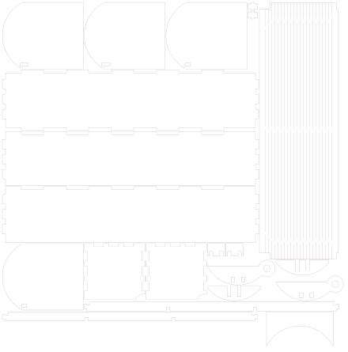

02 / הנדסה ותכנון
מהעיצוב לתכנון
תכנון פריסה של 21 חלקים על לוח 440 × 800 mm מדיקט בירץ 4 mm. המרווח המזערי שנבדק בין קווי המתאר הוא 1 mm. נדרש כיול Kerf לפני חיתוך.
קובצי המקור מסומנים DESIGN_ONLY: טרם אושר תהליך ייצור.

תצוגת וקטור של הגאומטריה המעודכנת, עם חיתוך האזור הריק בתחתית לצורכי הצגה בלבד. המקור הוא גליון 440 × 800 mm. אין להשתמש בתצוגה זו לחיתוך.